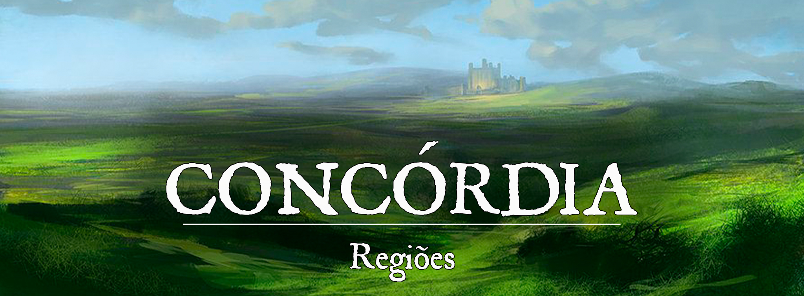

Concórdia
Descrição
Concórdia é um território neutro localizado entre os reinos de Kotka e Rúbria. É utilizado como um local seguro para encontros e negociações diplomáticas entre os dois reinos, devido à tensão política crescente entre eles. Além disso, a região também é usada para processar burocracia para aqueles que desejam viajar entre Kotka e Rúbria. Crianças nascidas em Concórdia ganham a cidadania do reino de origem dos seus pais. A região não possui cidades, apenas localidades básicas, tavernas, estalagens e embaixadas para os encontros diplomáticos.
Descrição Visual:
É composto principalmente por morros e planícies, com poucas localidades visíveis. As únicas construções que chamam atenção são as embaixadas, que servem como locais para encontros diplomáticos entre os dois reinos.
Função:
Concórdia é um território neutro criado para ser um local seguro para encontros e negociações diplomáticas entre os reinos de Kotka e Rúbria, devido à tensão política entre os dois países. Neste território, também acontecem processos burocráticos para cidadãos de Kotka e Rúbria que desejam transitar entre os reinos.
Regras:
Entrada:
A regulamentação de entrada para a região de Concórdia é bastante rigorosa e estrita, a fim de garantir a segurança e a estabilidade da região neutra. Cidadãos de Kotka e Rúbria precisam apresentar vários documentos e passar por uma série de verificações antes de serem permitidos a entrar na região.} É importante notar que qualquer violação das regras de entrada de Concórdia pode resultar em penalidades severas, incluindo a expulsão da região e a proibição de entrada futura. Além disso, as autoridades locais reservam-se o direito de negar a entrada a qualquer pessoa
Atividades Políticas:
A proibição de atividades políticas em Concórdia é rigorosamente aplicada para garantir a neutralidade da região e evitar conflitos entre os representantes dos reinos de Kotka e Rúbria. Isso inclui a proibição de qualquer tipo de manifestação ou campanha, bem como a proibição de distribuição de materiais políticos ou a realização de discursos políticos. Qualquer cidadão de Kotka ou Rúbria que desrespeitar essa proibição pode ser expulso da região e ter sua entrada futura proibida.
Negociações:
Todas as negociações diplomáticas devem ser realizadas nas embaixadas de Kotka e Rúbria, ou em locais designados pelos respectivos governos.
É proibido qualquer tipo de transcrição ou transmissão das negociações sem autorização prévia dos governos de Kotka e Rúbria.
As negociações devem ser conduzidas em um ambiente seguro e privado, com medidas de segurança adequadas para proteger os participantes.
É proibido qualquer tipo de armamento ou armas na sala de negociações.
Todas as partes devem seguir as regras de cortesia e etiqueta diplomática, e qualquer violação poderá resultar em sanções.
A equipe de segurança de Concórdia é responsável por garantir a segurança dos participantes e das negociações, e tem autoridade para tomar medidas necessárias para garantir a segurança.
Conflito
O Tratado de Concórdia:
O conflito entre os reinos de Kotka e Rúbria tem raízes históricas profundas e tem sido alimentado por disputas territoriais, desacordos políticos e desconfiança mútua. O Tratado de Concórdia foi proposto como uma solução para resolver essas tensões e alcançar a paz entre os dois reinos.
No entanto, as negociações para o Tratado de Concórdia têm sido difíceis e prolongadas. Ambos os lados se recusam a ceder em questões cruciais. Além disso, as relações diplomáticas entre os dois reinos são tensas, com acusações de espionagem e interferência em assuntos internos.
Os representantes de Kotka e Rúbria têm se reunido várias vezes para discutir o Tratado de Concórdia, mas até agora não conseguiram chegar a um acordo. Enquanto isso, o povo de ambos os reinos sofre com o impacto do conflito, incluindo deslocamentos forçados, escassez de recursos e tensão crescente entre as comunidades locais.
O processo de negociação tem sido complicado ainda mais pela presença de grupos extremistas e radicais em ambos os lados, que se opõem a qualquer tipo de acordo e trabalham para sabotar as negociações. Os outros reinos têm-se mostrado preocupados com o estado de impasse e tem-se empenhado em mediar as negociações, mas até agora sem sucesso.
NPCs Presentes
Marcus Galloway: Um homem experiente, tendo servido como embaixador de Rúbria em vários países antes de ser designado para Concórdia. Ele é conhecido por ser muito inteligente e calculista, tendo uma visão lógica das coisas e sempre buscando o equilíbrio entre as necessidades de seu reino e as necessidades do território neutro. Ele é também conhecido por ser muito paciente e capaz de manter a calma em situações de tensão. Ele é respeitado tanto pelos seus pares quanto pelos seus inimigos políticos, pois ele sempre tem uma abordagem honesta e justa nas negociações.
Ivan Petrov: Ele é um homem impetuoso e impulsivo, sempre pronto para defender os interesses de seu reino. Ele tem um temperamento forte e é conhecido por ser um lutador incansável. Ele não tem paciência para negociações longas e tende a ser muito direto em suas abordagens. Ele acredita que a força e a determinação são a chave para o sucesso nas negociações diplomáticas. Ele também é muito leal à sua rainha e sempre busca proteger os interesses de Kotka, às vezes à custa de seus relacionamentos com outros países. Ele é um homem que segue seus próprios princípios e não tem medo de desafiar a autoridade, se ele acredita que isso é o melhor para seu reino.
Oficial Schmitz: Ela é uma mulher rigorosa e imparcial, sempre seguindo as regras e regulamentos à risca. Ela é muito respeitada por sua honestidade e integridade, e é conhecida por ser muito profissional e eficiente em suas tarefas. ela é muito atenciosa e paciente com os viajantes, mas não tolera qualquer tipo de irregularidade ou tentativa de burla. Ela acredita que sua responsabilidade é garantir a segurança e a ordem em Concórdia, e não hesita em tomar medidas drásticas se necessário. Apesar de ser imparcial, ela tem um certo sentimento de orgulho de sua terra natal e tenta sempre ser uma boa representante de Mannheim.
Organizações Presentes
História de Origem
A origem de Concórdia se deu devido à tensão política crescente entre os reinos de Kotka e Rúbria. Com a dificuldade crescente para os representantes dos dois reinos se encontrarem e negociarem, os líderes dos reinos se reuniram para encontrar uma solução. Após muitas discussões e negociações, foi decidido que seria criado um território neutro, onde os encontros diplomáticos pudessem ser realizados com segurança e privacidade.
Esse território foi batizado de Concórdia, e foi estabelecido como um lugar onde as leis e regras seriam específicas para garantir a segurança e privacidade das negociações diplomáticas. Além disso, foi estabelecido que crianças nascidas em Concórdia teriam a cidadania do reino de origem dos seus pais.
A criação de Concórdia foi recebida com alívio por ambos os reinos, e desde então tem sido utilizado com sucesso como um local para encontros e negociações diplomáticas entre Kotka e Rúbria. A regulamentação de entrada, proibição de atividades políticas e regulamentação de negociações diplomáticas foram implementadas para garantir a segurança e privacidade dos encontros.